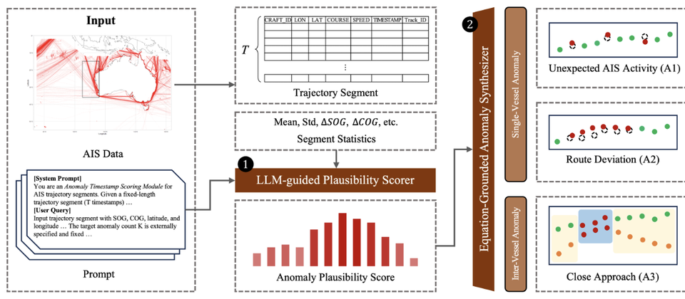
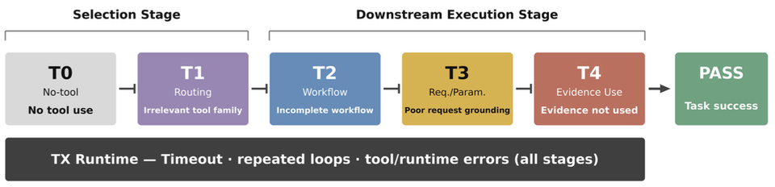
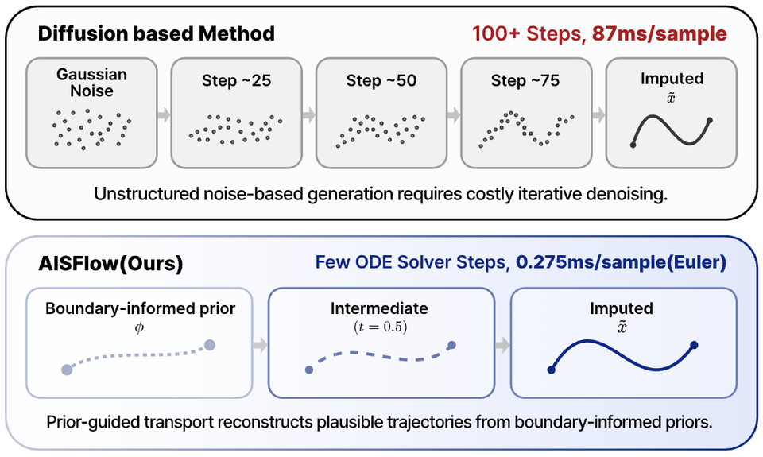

Seoul National University
M.S. in Data Science
Advisor: Hyunwoo Park

M.S. Student, Graduate School of Data Science, Seoul National University
Seoul, Republic of Korea
I am a M.S. student at the Graduate School of Data Science, Seoul National University, where I work in the Data Intelligence and Learning (DIAL) Lab under Prof. Hyunwoo Park.
My current interest is agentic AI. In particular, I work on using on-policy self-distillation and on-policy reinforcement learning to make long-horizon, tool-using agents more reliable. I am also interested in generative methods such as diffusion and flow matching, and in how they carry across multiple modalities.
You can reach me at sunghobae@snu.ac.kr, or take a look at my CV.
Sungho Bae denotes my name · * denotes equal contribution

ACM SIGKDD, 2026Oral

ICML Workshop on Failure Modes in Agentic AI (FAGEN), 2026

ICML Workshop on AI for Science, 2026
M.S. in Data Science
Advisor: Hyunwoo Park
B.S. in Computer Science · Minor in AI Convergence
Advisor: Euiseok Hwang
Outstanding Undergraduate Thesis Award
Physics and Chemistry
2023 Winter EECS Department Outstanding Bachelor Intern
A Study on Efficient Feature Selection for Smart Meter Data Analysis
Platform supporting active seniors in staying socially engaged
iPhone Shortcut shopping assistant for people with visual impairments
Time-series forecasting for palm oil prices · NeurIPS 2023 participation opportunity
Store sales forecasting · Internship opportunity at CJ OliveNetworks
Book-based community iOS app for neighbors
Data Engineering @ GIST
Data Visualization and Me @ Seoul National University
Developed the KAERA iOS application with Team HARA
Completed compulsory military service
Led events and community initiatives for dormitory residents